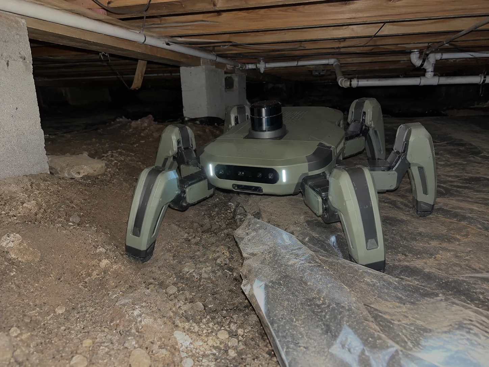
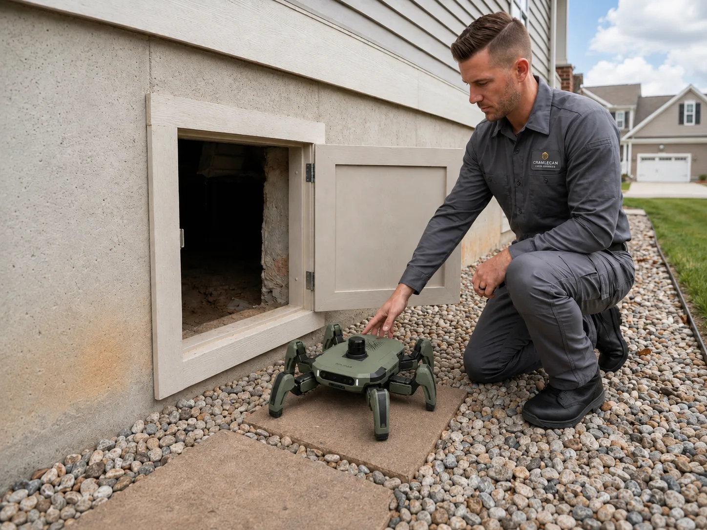
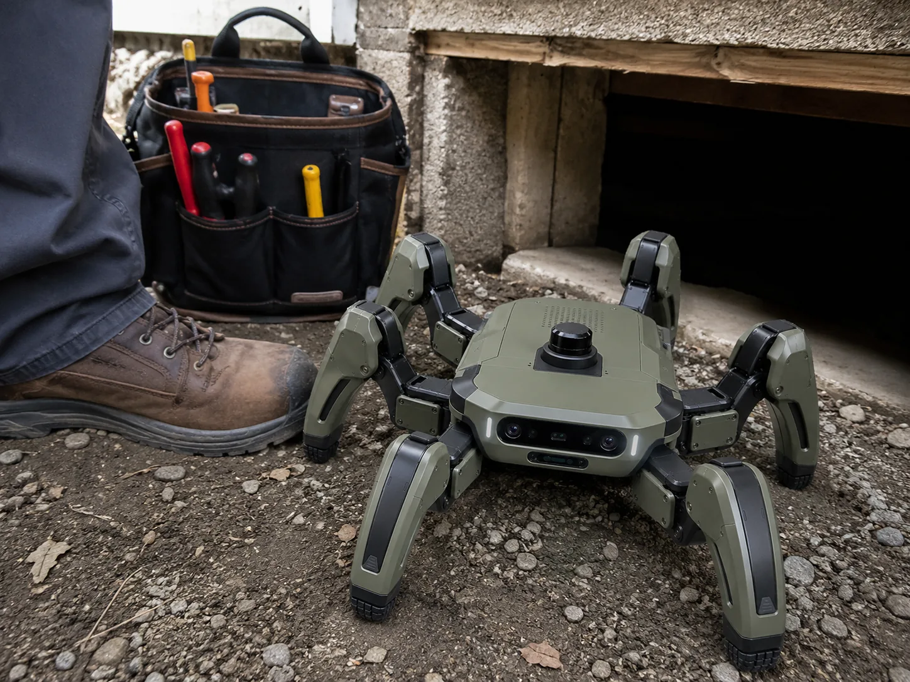
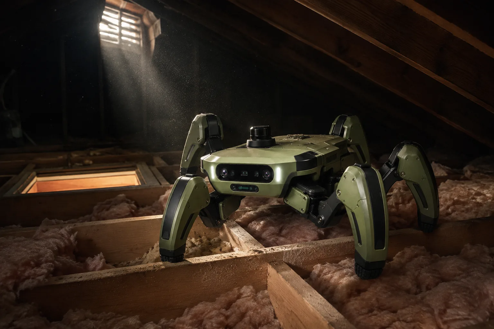
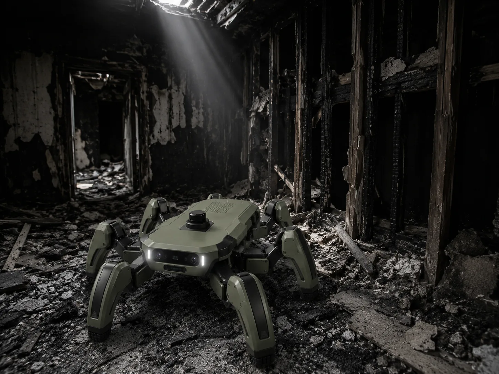
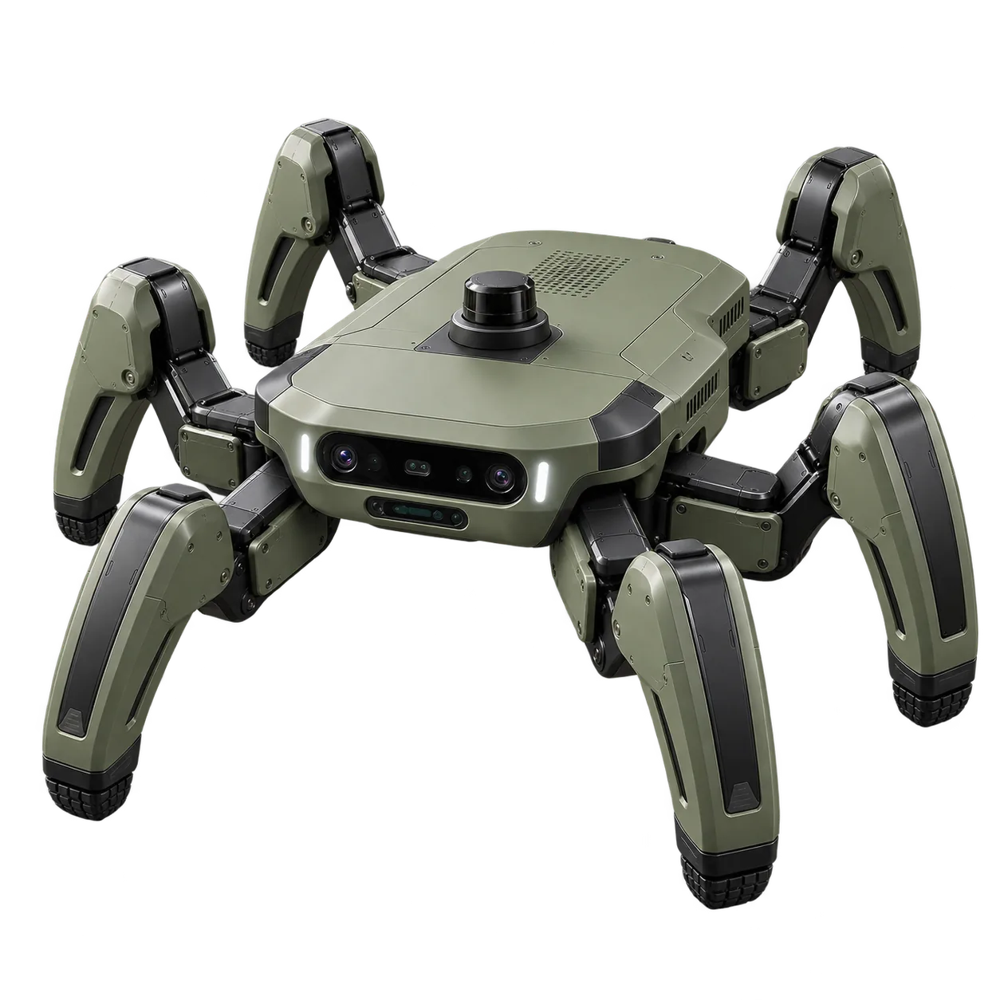

CRAWL SPACES
The core mission. Gaps, debris, and standing water that stop wheels and people alike.

AUTONOMOUS INSPECTION · RESTORATION & HOME SERVICES
A 30-centimeter autonomous robot that inspects the crawl spaces, attics, and fire scenes your technicians shouldn't have to enter.
THE JOB TODAY
Forty-five minutes to an hour under the house with a handheld meter. Bad air, wildlife, missed moisture pockets — and the liability rides with the owner. It's the worst part of the job, and it happens every day.
01 DEPLOY
Set the unit at the opening. No controller, no cable, no signal required.
02 INSPECT
It walks the space on its own, over pipes, debris, and vapor barrier, logging moisture, air quality, and imagery as it goes.
03 REPORT
Retrieve it and get a mapped, time-stamped record of the space. Documentation your office and the insurer can actually use.
While it works, your technician is setting equipment, talking to the homeowner, or starting the next job.

SCALE · 30 CM CLASS · PASSES THE HATCH A TECHNICIAN HAS TO SQUEEZE THROUGH
WHERE IT GOES

CRAWL SPACES
The core mission. Gaps, debris, and standing water that stop wheels and people alike.

ATTICS
Summer attics reach temperatures no one should work in. Send the machine.

AFTER THE FIRE
Structures too compromised to enter still have to be scoped. It goes first.
A legged platform that compresses to pass through gaps narrower than itself — locomotion developed through years of CU Boulder research into how insects navigate real-world terrain. Everything runs on the robot. No cloud, no connectivity, no signal under the house.

UNIT S-04 · FIELD PILOT
MACRO · SENSOR HEAD / ARTICULATED LEG / TREAD FOOT
ENGINEERED FROM CU BOULDER RESEARCH · BUILT ON $1M+ OF U.S. AIR FORCE & ROLLS-ROYCE FUNDED SCIENCE · FIELD PILOTS UNDERWAY WITH RESTORATION OPERATORS
We're deploying with a small number of restoration and inspection operators. If crawl spaces, attics, or fire scenes are part of your week, we want to talk.
REQUEST ACCESS